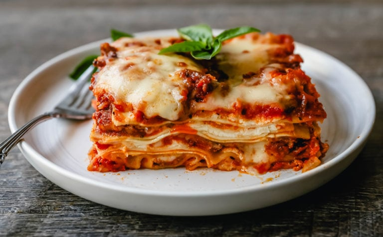

Lasagna

Italia is famous because of italian food and italian food is famous because of lasagna
In this recipe we're going to show you how to cook
the most delicious lasagna in the world!
Ingredients
- 1 pound sweet italian susage
- 3/4 pound lean ground beef
- 1/2 cup minced onion
- 2 cloves garlic, crushed
- 1 can crushe tomatoes
- 2 cans tomato paste
- 2 cans canned tomato sauce
- 1/2 cup water
- 2 tablespoons white sugar
Steps
- In a Dutch oven, cook sausage, ground beef, onion, and garlic over medium heat until well browned. Stir in
crushed tomatoes, tomato paste, tomato sauce, and water. Season with sugar, basil, fennel seeds, Italian
seasoning, 1 teaspoon salt, pepper, and 2 tablespoons parsley. Simmer, covered, for about 1 1/2 hours,
stirring occasionally.
- Bring a large pot of lightly salted water to a boil. Cook lasagna noodles in boiling water for 8 to 10
minutes. Drain noodles, and rinse with cold water. In a mixing bowl, combine ricotta cheese with egg,
remaining parsley, and 1/2 teaspoon salt.
- Preheat oven to 375 degrees F (190 degrees C).
- Bake in preheated oven for 25 minutes. Remove foil, and bake an additional 25 minutes. Cool for 15 minutes
before serving.